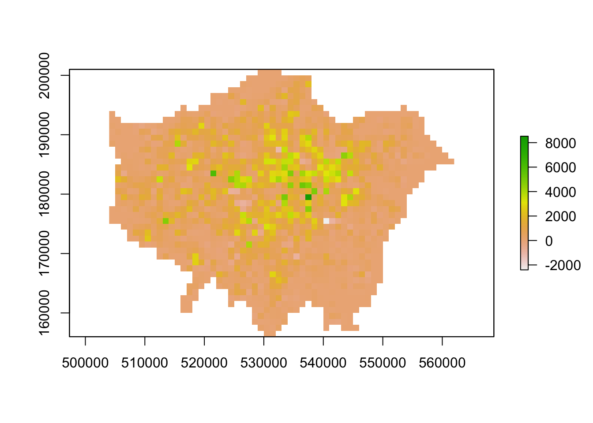
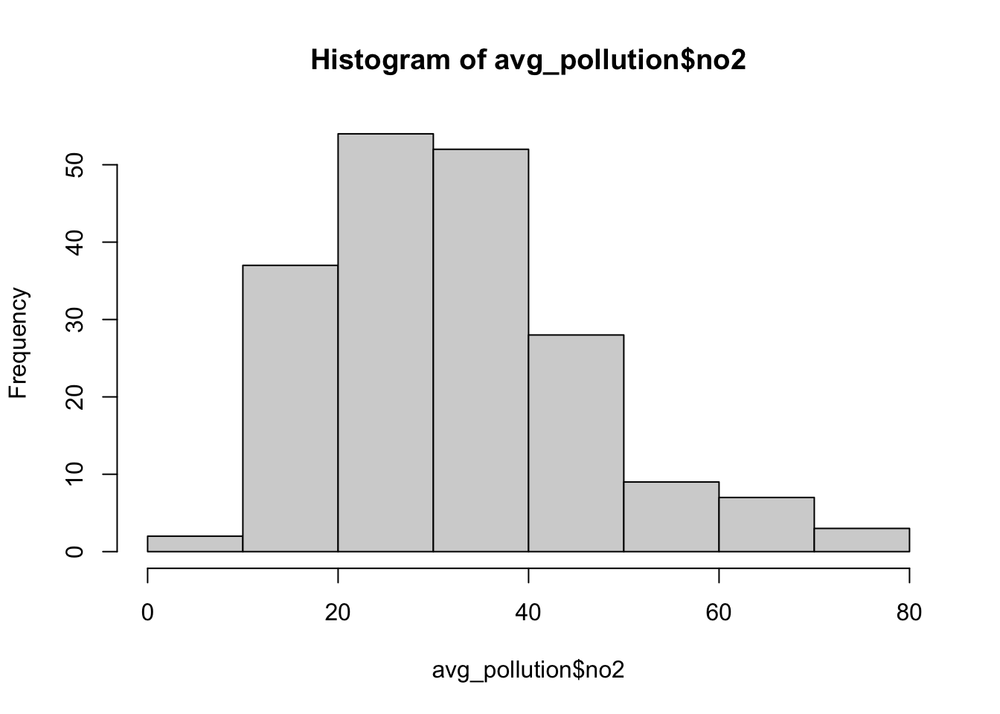
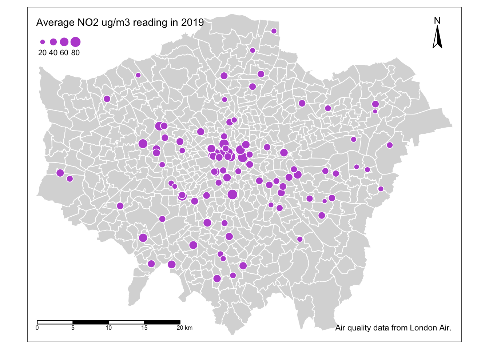
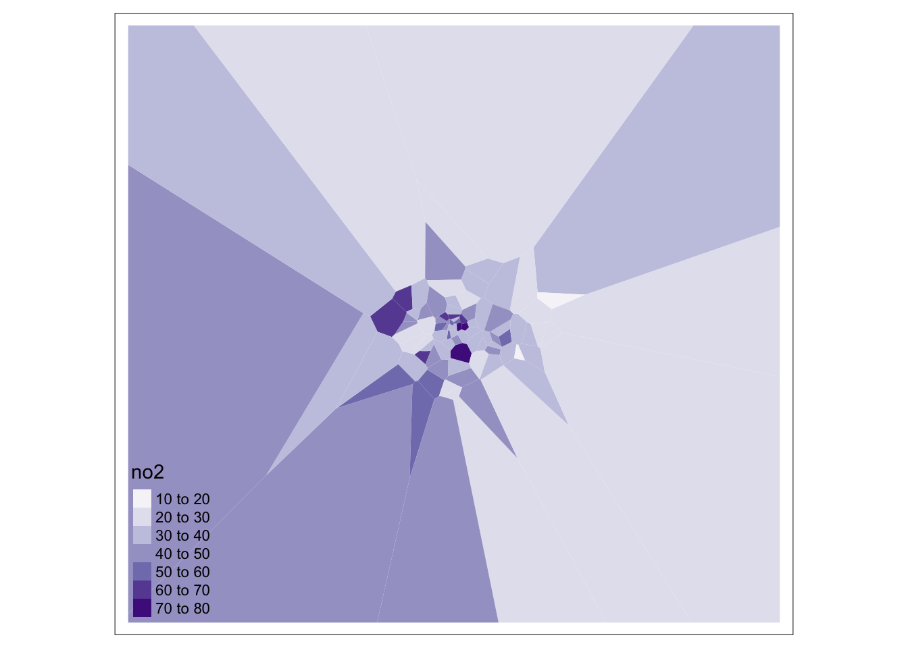
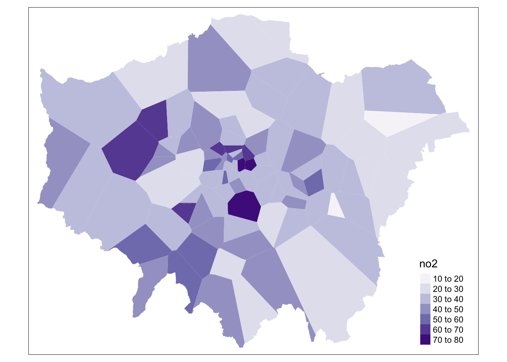
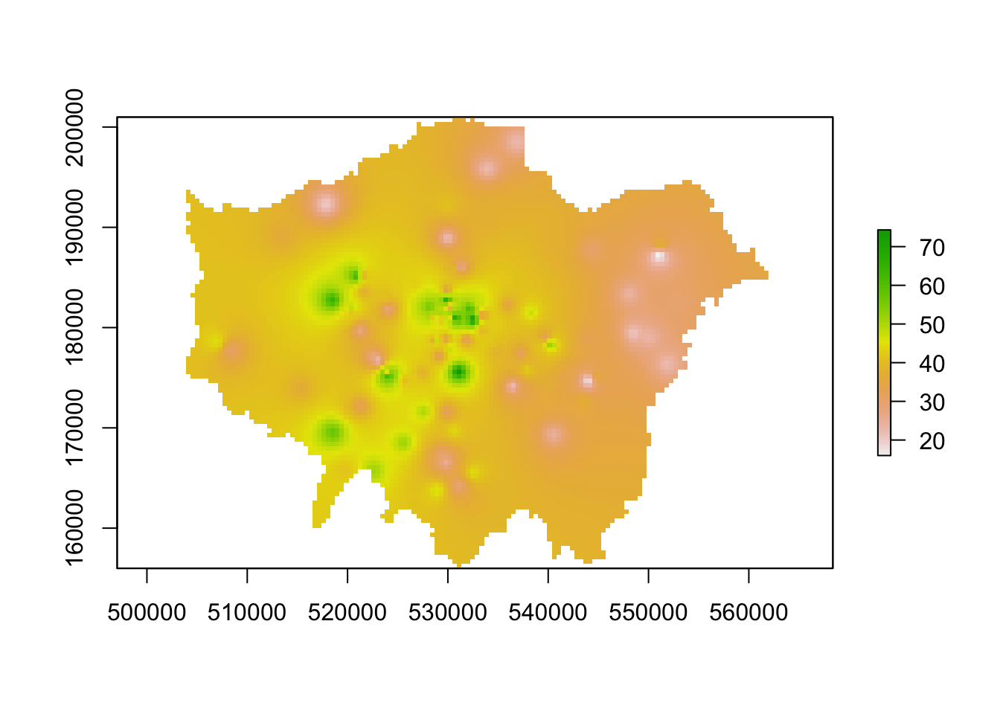
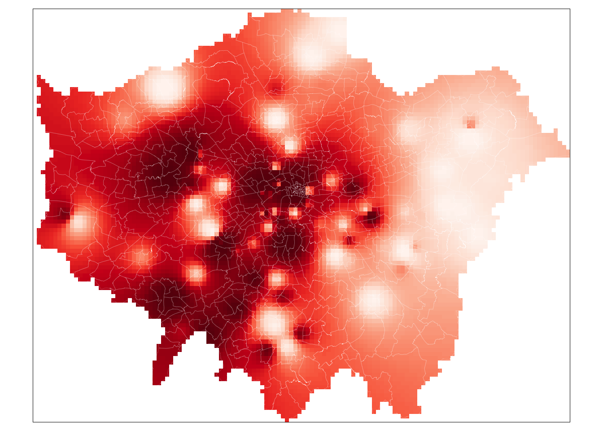
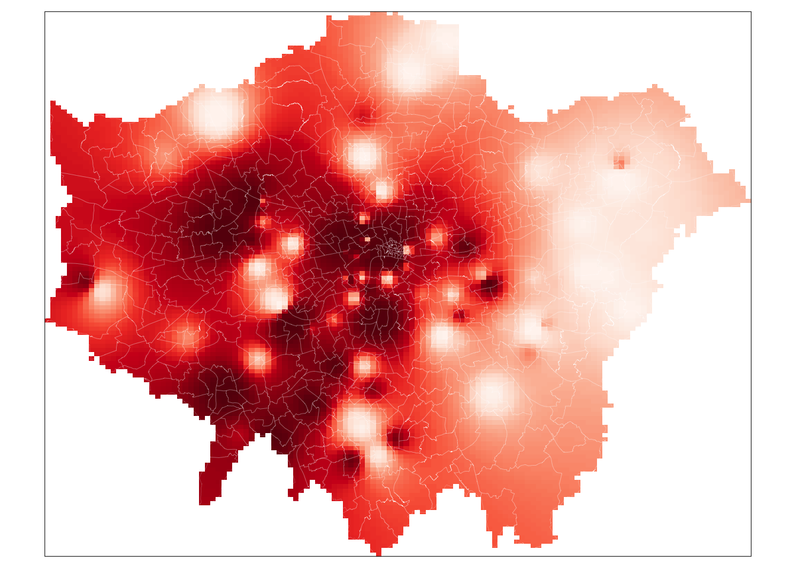

9 Rasters, Zonal Statistics and Interpolation
So far, the majority of our module has focused on the use of vector data and table data (that we have then joined to vector data). This week, we switch it up by focusing primarily on raster data and its analysis using map algebra and zonal statistics.
9.1 Lecture recording
- Lecture W9
9.2 Reading list
- Reading #1
- Reading #2
9.3 Raster data
This week’s content introduces you to raster data, map algebra and interpolation. After first looking at population change in London using raster data, we will then look at generating pollution maps in London from individual point readings taken from air quality monitoring sites across London. To complete this analysis, we will be using several new data sets:
- Population rasters for Great Britain: Raster data sets containing estimated population counts for Great Britain in 2001 and 2011 at a spatial resolution of 1km.
- NO2 readings across London: A data set contain readings of NO2 for individual air quality monitoring sites in London.
We will also use our London Wards (2018) administrative boundaries data set at various points within both practicals. This file should already be in your raw/boundaries folder.
9.3.1 Housekeeping
Let’s get ourselves ready to start our practical content by first downloading the relevant data and loading this within our script. Open a new script within your GEOG0030 project and save this script as wk9-pollution-raster-analysis.r.At the top of your script, add the following metadata (substitute accordingly):
# Analysing population change and pollution in London
# Data: January 2022
# Author: JustinIn addition to those libraries you should now be familiar with, we will need to install and use:
rgdal: for under-the-hood spatial data managementrgeos: for more under-the-hood spatial data managementgstat: to complete our various interpolation techniquessp: for spatial analysis (“predecessor” ofsf)
Within your script, add the following libraries for loading:
# libraries
library(tidyverse)
library(sf)
library(tmap)
library(RColorBrewer)
library(raster)
library(sp)
library(rgdal)
library(rgeos)
library(gstat)
library(spatstat)9.3.2 Downloading data
9.3.2.1 Population data
For the first part of this week’s practical material we will be using raster data sets from the Population Change and Geographic Inequalities in the UK, 1971-2011 (PopChange) project. In this ESRC-funded project, researchers from the University of Liverpool created raster population surfaces from publicly available Census data (1971, 1981, 1991, 2001, 2011). These population surfaces are estimates of counts of people, displayed within a regular grid raster of a spatial resolution of 1km. These surfaces can be used “to explore, for example, changes in the demographic profiles of small areas, area deprivation, or country of birth”.
To enable this, the researchers have created several categories of rasters, including: Total Population, Population by Age, Population by Country of Birth, Population by Ethnicity etc. This week we will use the Total Population data sets. To access data directly from the PopChange website requires a simple registration for log-in, you can then navigate through the data sets and choose those you would like to download.
For this week, we have gone ahead and downloaded the data for you, which you can access directly from the links below:
| PopChange Raster | File Type | Link |
|---|---|---|
| Population surface GB 2001 - Total Population | asc |
Download |
| Population surface GB 2011 - Total Population | asc |
Download |
Once downloaded, copy over these files into your data/raw/population folder.
9.3.2.2 Pollution data
For the second part of this week’s practical material, we will explore several methods of interpolation by looking at air pollution in London by getting data from the Londonair website. Londonair is the website of the London Air Quality Network (LAQN), and shows air pollution in London and south east England that is provided by the Environmental Research Group of Imperial College London. The data are captured by hundreds of sensors at various continuous monitoring sites in London and the south east of England. The data are publicly available for download - and we can use an R package to directly interact with the data without needing to download it.
The openair R package enables us to import data directly form the Londonair website. However, because the openair contains C++ code, a compiler is needed. For Windows, for example, Rtools is needed. Depending on your system and configuration this can sometimes be a hassle: to make things easy for us, you can simply download a copy of the data below:
| Pollution Data | Type | Link |
|---|---|---|
| Air pollution in London for 2019 (NO2) | csv |
Download |
Once downloaded, copy over these files into a data/raw/pollution folder. Please note that the file is rather larger (~170 MB) and it is best to keep it as .zip file.
9.3.3 Raster data
In the previous weeks, we have predominantly worked with vector data and/or table data that we then join to vector data for analysis. However, depending on the nature of your research problem, you may also encounter raster data.

Figure 9.1: A hypothetical raster and a vector model of landse.
If you remember, the main difference between vector and raster models is how they are structured. Our vectors are represented by three different types of geometries: points, lines and polygons. We have used point data in the form of our stations and bike theft, and polygons in the form of our ward and borough boundaries. In comparison, our raster data sets are composed of pixels (or grid cells) - a bit like an image This means that a raster data set represents a geographic phenomenon by dividing the world into a set of rectangular cells that are laid out in a grid. Each cell holds one value that represents the value of that phenomena at the location, e.g. a population density at that grid cell location. In comparison to vector data, we do not have an attribute table containing fields to analyse.
All analysis conducted on a raster data set therefore is primarily conducted on the cell values of a raster, rather than on the attribute values of the observations contained within our data set or the precise geometries of our data set. Probably one of the most common or well-known types of raster data are those that we can derive from remote sensing, including satellite and RADAR/LIDAR imagery that we see used in many environmental modelling applications, such as land use and pollution monitoring. However, over the last few years, raster data has increasingly being used within spatial data science applications. For example, Worldpop and Facebook have created raster-based estimates of population density (and other variables), that you can access openly via their respective links.
Beyond their benefits in computational requirements and even, for some geographical phenomena, visualisation capacity and capabilities, a key advantage of raster data is that is relatively straight-forward to standardise data across space (i.e. different countries) and across variables (i.e. different data sets) to enable greater compatibility and easier comparison of data sets than its vector counterparts. We have, for example, seen that we can run into issues quickly even with data on London, as our ward boundaries have changed so frequently even over just the last ten years.
This standardisation can occur as raster data has:
- An origin point from which the grid extends and then a precise number of columns and rows within said data set;
- A specific spatial resolution which refers to the cell size of the raster data set, e.g. are the grid square 100m x 100m, 1000m x 1000m etc?
From these two values, it is possible to calculate the size of our raster (number of columns X spatial resolution by the number of rows X spatial resolution) as well as * snap future rasters (or resample current rasters) to both the spatial extent and the spatial delineation of one raster data set (i.e. ensure the cells between the rasters will align with one another). This enables us to create rasters that essentially “line up with one another” - and by doing so, we areable to complete specific calculations between our raster data sets known as map algebra.
Map algebra is exactly what it sounds like - it basically involves doing maths with maps!
The key difference is that, within spatial analysis, it only applies to raster data, hence it’s name as either map algebra or raster math.
9.3.4 Map algebra
Map algebra is a set-based algebra for manipulating geographic data, coined by Dana Tomlin in the early 1980s. Map algebra uses maths-like operations, including addition, subtraction and multiplication to update raster cell values - depending on the output you’re looking to achieve. The most common type of map algebra is to apply these operations using a cell-by-cell function. Conceptually, this approach will directly stack rasters on top of one another and complete the mathematical operations that you’ve supplied to the cells that are aligned with each other.
These operations might include:
- Arithmetic operations that use basic mathematical functions like addition, subtraction, multiplication and division.
- Statistical operations that use statistical operations such as minimum, maximum, average and median.
- Relational operations, which compare cells using functions such as greater than, smaller than or equal to.
- Trigonometric operations, which use sine, cosine, tangent, arcsine between two or more raster layers.
- Exponential and logarithmic operations that use exponent and logarithm functions.
But it is also possible to run (some of) these operations at a different scale. Map algebra functions can be applied using for four different approaches:
- Local: The simplest approach - completing functions on a cell-by-cell basis.
- Global: Used to apply a bulk change to all cells in a raster using a function, e.g. add 1 to all values in a raster, or calculate the euclidean distance each cell is away from a specific cell.
- Focal: Apply a function to a set of neighborhood values to calculate the output for a single cell, e.g. using a moving window, such as kernel.
- Zonal: Apply a function to a group of cells within a specified zone (zone can be provided as a raster or vector format).
The utilisation of these functions can enable many different types of specialised raster analysis, such as recoding or reclassifying indivdual rasters to reduce complexity in their data values, generating the Normalised Difference Vegetation Index for a satellite imagery data set, or calculating Least Cost Estimate Surfaces to find the most “efficient” path from one cell in a raster to another. Furthermore, using multiple raster data sets, it is possible to combine these data through our “mathematical overlays”, from the basic mathematical operations mentioned above to more complex modelling, such as prediction using Bayes theorem.
The results of these overlays have many applications, including identifying suitable locations for placing a new school or modelling risk to viruses, such as the Zika virus (e.g. Cunze et al, 2019 and Santos & Meneses, 2017 for those of you interested in this application), and, of course, as highlighted above, population density.
9.4 Population change in London
The first part of our practical this week will look at map algebra in action - and some simple raster data process - by looking to analyse population change in London between 2001 and 2011. To do so, we are going to complete a very simple bit of map algebra - we will subtract the values of the 2011 raster data set from the 2011 raster data set and then map the resulting values, i.e. population change. One question to think about - and reflect on as we move forward with this practical - is that we already know that small-area counts of people in a variety of population subgroups are publicly released for each Census and via the Mid-Year estimates, so why was it necessary to create these raster population surfaces?
Before we open up the data in R, try to have a ‘non-spatial sneak peak’ at the .asc file by opening it in a normal text editor, for instance, TextEdit on Mac OS or NotePad on Windows. What you will notice is that the asc file, which is an exchange format, is in very fact a flat plain text file:

Figure 9.2: Raster or plain text?
Reflecting on what we have just read about rasters and their format, what do you think the first few lines of the asc file, when opened with a text editor, mean?
9.4.1 Loading data
Let’s get started and take a look at our data - first we need to load it into R (using the raster library) and then we can quickly plot it using the base plot function:
# load our two raster data sets
pop_2001 <- raster("data/raw/population/5a_ascii_grid2001_Total_Population_UsRsPopA.asc")
pop_2011 <- raster("data/raw/population/5a_ascii_grid2011_Total_Population_URPopAll.asc")
# plot 2001 - this can be a little slow, especially for large raster
plot(pop_2001)
# plot 2011 - this can be a little slow, especially for large rasters
plot(pop_2011)
You should see that whilst your maps look very similar, the legend certainly shows that the values associated with each cell has grown over the 10 years between 2001 and 2011 - we see our maximum increase from 15,000 people per cell to 20,000 people per cell.
Now we have our raster data loaded, we want to reduce it to show only London using our London Ward shapefile. To do so, we will use a combination of two techniques - the crop() function and then using a mask to refine our raster further. The crop() function crop any raster by the overall spatial extent or rather bounding box of the y data set. As a result, the raster returned will be rectangular (or square) in shape - and not cropped to the precise geometry of the y data set that we see in the use of the st_intersections() function that we use with vector data. To reduce a raster to the (almost) precise geometry of the y data set, we need to instead use a mask approach.
Note
A mask will only work when using two raster data sets. As a result, we need to turn our y data set (in our case, the London Ward shapefile) into a raster - a process simply known as “rasterize” or “rasterizing”. This process of rasterizing will turn our polygon data set into a raster and thus simplify/alter the geometry of our data set to coerce it into a grid-based data set:
Figure 9.3: Rasterising a line vector - forcing geometries into a grid. Source: Lovelace et al. 2020.
To ensure our resulting raster of our London Ward shapefile matches the spatial delineation (aligns our cells) and resolution (make cells the same size) of our population rasters, instead of separately rasterising (using the rasterise() function) our London Ward shapefile and then masking (using the mask() function) our rasters by the resulting raster, we can combine this into one, still using the rasterise() function but adding the London population rasters into the function and the mask parameter set to True.
Load our London Ward shapefile and use this to first crop, then mask our population rasters (through rasterising):
# load london ward data
london_ward <- read_sf("data/raw/boundaries/2018/London_Ward.shp")
# crop raster to extent greater london
lonpop_2001 <- crop(pop_2001, london_ward)
lonpop_2011 <- crop(pop_2011, london_ward)
# rasterise London Ward, and mask each population raster
lonpop_2001 <- rasterize(london_ward, lonpop_2001, mask = TRUE)
lonpop_2011 <- rasterize(london_ward, lonpop_2011, mask = TRUE)
# plot the 2001 London population raster
plot(lonpop_2001)
# plot the 2011 London population raster
plot(lonpop_2011)
You should now have generated two plots for each year - you can quickly flick between the two and see there is evidence of population change between our two data sets.
9.4.2 Analysing population change
Now we have our two London population rasters, we are now ready to go ahead and calculate population change between our two data sets by subtracting our 2001 population raster from our 2011 population raster:
# subtract 2001 population from 2011 population
lonpop_change <- lonpop_2011 - lonpop_2001
# plot the results
plot(lonpop_change)
We now have a raster that shows us population change in London - and to our surprise, there are areas in which population has actually declined. We can utilise some of the focal and zonal functions from our map algebra catalogue to further enhance our understanding of population change in London.
To further analyse our population change raster, we can create a ‘pseduo’ hotspot map of our lonpop_change raster by calculating a smoothed version of our raster using the focal() function. This will enable us to see more clearly where there are areas of high counts (surrounded by areas of high counts) and vice versa - just like our KDE analysis of bike theft. Using the focal() function, we generate a raster that summarises the average (mean) value, using the fun= parameter set to mean, of the 9 nearest neighbours for each cell, using a weight matrix defined in our w parameter and set to a matrix (consisting of our cell with 3 rows and 3 columns as neighbours):
# focal statistics (of 9 neighbours) to calculate smoothed raster
lonpop_smooth <- focal(lonpop_change, w = matrix(1, 3, 3), fun = mean)
# plot results
plot(lonpop_smooth)Our areas of high population growth are now more visible in our data set. Our areas of population decline are potentially not as stark, but are certainly still visible within our raster. We can also look to use zonal functions to better represent our population change by aggregating our data to coarser resolutions. For example, we can resize our raster’s spatial resolution to contain larger grid cells which will, of course, simplify our data, making larger trends more visible in our data - but of course, may end up obfuscating smaller trends.
We can resize our lonpop_change raster by using the aggregate() function and setting the fact= (factor) parameter to the “order” of rescaling we would like (in our case, 2 times larger both width and height). We then provide the fun= (function) by which to aggregate our data, in this case, we will continue to use the mean but we could in fact provide min or max depending on our future applications/analysis of our data set:
# rescale raster and aggregate based on mean
lonpop_change_agg <- aggregate(lonpop_change, fact = 2, fun = mean)
# plot resulting raster
plot(lonpop_change_agg)
Another very common technique used in raster analysis via map algebra is the use of zonal statistics. As outlined earlier, a zonal statistics operation is one that calculates statistics on cell values of a raster (a value raster) within specific zones that are defined by another data set. The zones can be provided by both raster and vector data - as a result, zonal statistics are a really useful tool if we need to aggregate data from a raster data set for use within further analysis that primarily uses vector data, such as when we’re analysing data within administrative boundaries.
For example, in our case, we can aggregate the lonpop_change raster to our actual London Ward boundaries, i.e. calculate for each ward in our data set, the average (or other function) population change, as determined by our raster. We can, of course, use other functions other than the mean - what function you use will simply depend on your application. Esri has a great resource on how Zonal statistics works with other functions and raster
# aggregate to administrative geography note: the output is a vector that is
# forced to a SpatialPolygons object (not sf)
london_ward_pop <- raster::extract(lonpop_change, london_ward, fun = mean, sp = TRUE)
# plot via tmap
tm_shape(london_ward_pop) + tm_polygons(col = "layer")## Warning in sp::proj4string(obj): CRS object has comment, which is lost in output
We now have a vector data set that we could go ahead and run many of the analyses that we have completed in previous weeks. Furthermore, we can use this data within other analyses we might want to complete - for example, if we are using population change as a specific variable to analyse another data set that is only available as a vector data set / at the ward level.
Note
Trying to calculate population change, particularly across decades as we have done here, is quite difficult with our Census and Mid-Year Estimates given the differences in our Ward boundaries and the impact this has when we try to join data sets from different years that then have different codes that we need to join by attribute. Using raster data, such as these data sets, are a good workaround to these issues, but, of course, with any data processing, will add some level of uncertainty into our data sets.
9.5 Assignment 1
The first assignment this week is a purely theoretical question: How can we use a combination of the techniques we have used over the last few weeks to calculate the number of people in London under-served by public transport?
To answer the question, we want you to think of a method using what you have learnt above in regards to map algebra and your use of point data in the previous week, to think about how we can calculate the number of people who are not within 400m euclidean distance walk of a bus, tube or train station in London.
Note
Many libraries in r share the same function names. This can be a problem when these packages are loaded in a same R session. For instance extract is not only the name of a function in the raster package, but also the name of functions in the magrittr and tidyr packages. To ensure you are using the function that you think you are using, you can specify the package using the :: approach, as follows: library::function, e.g. tidyr::extract or raster::extract.
9.6 Air pollution in London
The second half of this week’s tutorial focuses on interpolation. Spatial interpolation is the prediction of a given phenomenon in unmeasured locations. There are many reasons why we may wish to interpolate point data across a map. It could be because we are trying to predict a variable across space, including in areas where there are little to no data. We might also want to smooth the data across space so that we cannot interpret the results of individuals, but still identify the general trends from the data. This is particularly useful when the data corresponds to individual persons and disclosing their locations is unethical.
To predict the values of the cells of our resulting raster, we need to determine how to interpolate between our points, i.e. develop a set of procedures that enable us to calculate predicted values of the variable of interest with confidence - and, of course, repetitively. We will put some techniques into action by interpolating our air quality point data into a raster surface to understand further how air pollution varies across London.
9.6.1 Loading data
Before we get going within interpolating our pollution data set, let’s first take a look at the distribution of the London Air monitoring sites in London. What are your thoughts about the distribution of the sites? Do you think they will provide enough data for an accurate enough interpolation?
.](images/W09/london_air.png)
Figure 9.4: Locations of the London Air monitoring sites in London. Source: Londonair 2020.
Ultimately, monitoring sites and the sensor stations present at them can be expensive to install and run - therefore, identifying the most important places for data collection will somewhat determine their location, alongside trying to create a somewhat even distribution over London. As we can see in the locations of the stations above, there are certainly some areas in London that do not have a station nearby, whilst others (such as central London) where there are many stations available.
When using interpolation, the distribution and density of our data points will impact the accuracy of our final raster - and we may end up with a level of uncertainty in the areas where data is more sparse, such as the north-west and the south-east of London. Despite this, we can still create an interpolated surface for our pollutant of interest - we just need to interpret our final raster with acknowledgement of these limitations. For this week’s practical, we will go ahead and use the Londonair’s data to study the levels of Nitrogen Dioxide (NO2) in London for 2019. Once we have our data loaded and processed in the right format, we will start interpolating our data using at first two models: Thiessen Polygons and Inverse Distance Weighting.
You can download the csv from the Pollution Data section, if you have not done so. Once downloaded, you can import our data directly from the csv within the zip folder you have downloaded:
# read in downloaded data
# as the file is quite large, we will read it directly from zip
pollution <- read_csv("data/raw/pollution/no2_london_2019.zip")
# pollution dataframe dimensions
dim(pollution)## [1] 1596509 7Reading in the csv might take a little time - we have 1,596,509 observations with 7 variables - that’s quite a substantial data set.
9.6.2 Analysing air pollution
Let’s take a look at why it’s so large and inspect the first five rows of our dataframe:
# Rreturn first five rows of our pollution dataframe
head(pollution)## # A tibble: 6 × 7
## date no2 site code latitude longitude site_type
## <dttm> <dbl> <chr> <chr> <dbl> <dbl> <chr>
## 1 2019-07-01 12:00:00 14.5 Southwark - Towe… SK8 51.5 -0.0782 Roadside
## 2 2019-07-01 13:00:00 16.1 Southwark - Towe… SK8 51.5 -0.0782 Roadside
## 3 2019-07-01 14:00:00 16.2 Southwark - Towe… SK8 51.5 -0.0782 Roadside
## 4 2019-07-01 15:00:00 21.8 Southwark - Towe… SK8 51.5 -0.0782 Roadside
## 5 2019-07-01 16:00:00 19.7 Southwark - Towe… SK8 51.5 -0.0782 Roadside
## 6 2019-07-01 17:00:00 17.5 Southwark - Towe… SK8 51.5 -0.0782 RoadsideWe can see that in our first five rows we have data for the same site - and if we look at the date field, we can see we have a reading observation for every hour!=. With 24 hours in the day, 365 days in a year and potentially hundreds of sites, it should therefore be of no surprise that we have such a big csv. In the end, for this practical, we only want to create one raster - so to make our data more useable, we will go ahead and aggregate the data and get the average NO2 value for each monitoring site over 2019.
Use the dplyr library functions to return the mean NO2 value for each monitoring site over 2019. Let’s also make sure that we retain the latitude and longitude of our monitoring sites:
# aggregate data to unique latitude and longitude combinations, remove
# monitoring sites without coordinates, summarise the no2 by the mean
avg_pollution <- pollution %>%
group_by(latitude, longitude) %>%
summarise(no2 = mean(no2)) %>%
filter(!is.na(latitude | longitude))
# return the first five rows of our new dataframe
head(avg_pollution)## # A tibble: 6 × 3
## # Groups: latitude [6]
## latitude longitude no2
## <dbl> <dbl> <dbl>
## 1 49.8 -7.56 35.6
## 2 50.4 -4.14 17.5
## 3 50.7 -1.83 11.5
## 4 50.8 0.284 15.7
## 5 50.8 0.181 7.23
## 6 50.8 0.272 11.4# return the histogram of our no2 values
hist(avg_pollution$no2)
We should now see that we only have our latitude and longitude coordinates and the average NO2 value associated with each. Our histogram also shows us the general distribution of our values - we can see that we have a slight positive skew to our data set. To use this data within our different interpolation methods, we will need to transform our data into a point spatial dataframe using the st_as_sf() function that we have come across before. One thing you should notice is that the latitude and longitude are, of course, in WGS84 - therefore, we need to reproject our resulting spatial dataframe into British National Grid. We will also make sure that all of our points are within our London Ward extent, using the st_intersection() function.
Create a spatial dataframe containing our London monitoring sites and their average NO2 reading:
# load London Wards for reference map
london_ward <- read_sf("data/raw/boundaries/2018/London_Ward.shp")
# create a point spatial dataframe, project
pollution_points <- st_as_sf(avg_pollution, coords = c("longitude", "latitude"),
crs = 4326)[, 1] %>%
st_transform(27700)
# ensure all points are within the boundaries of Greater London
lonpollution_points <- pollution_points %>%
st_intersection(london_ward)## Warning: attribute variables are assumed to be spatially constant throughout all
## geometriesLet’s create a proportional symbol map to visualise these points:
# ensure tmap mode is set to plot
tmap_mode("plot")
# plot our London wards in grey
tm_shape(london_ward) +
tm_polygons(palette = "grey", border.col = "white") +
# plot our pollution_points as bubbles, using the NO2 field to determine size
tm_shape(lonpollution_points) +
tm_bubbles(size = "no2", col = "mediumorchid", style = "pretty",
scale =1, border.col = "white",
title.size="Average NO2 ug/m3 reading in 2019") +
# set legend
tm_layout(legend.position = c("left", "top")) +
# add a north arrow
tm_compass(type = "arrow", position = c("right", "top")) +
# add a scale bar
tm_scale_bar(breaks = c(0, 5, 10, 15, 20), position = c("left", "bottom")) +
# add a data statement
tm_credits("Air quality data from London Air.") 
Our proportional symbols map already tells us a little about our data set - we can see that NO2 levels are much higher towards the centre of London, although we can see some anomalies in the south-west, for example. But we can also see how and why a smoothed surface of our data could be really useful for further interpretation - and this is where interpolating our data comes in.
9.6.2.1 Thiessen polygons
The first step we can take to interpolate the data across space is to create Thiessen polygons. Thiessen polygons are formed to assign boundaries of the areas closest to each unique point. Therefore, for every point in a data set, it has a corresponding Thiessen polygon.

Figure 9.5: Creating a set of Thiessen polygons. Source: Esri 2020.
Note
You may come across something called Voronoi polygons - which is the same thing as Thiessen polygons. Both terms are used interchangeably to describe this type of geometry created from point data. In the field of GIS we tend to refer to them as Thiessen polygons, after the American meteorologist who frequented their use. In other fields, particularly mathematics and computer science, they are generally referred to as Voronoi diagrams, in honour of the mathematician Georgy Voronoy.
Whilst the spatstat library from last week offers a simple function to create our Thiessen polygons (through the dirichlet() tessellation function), to use the spatstat library, we will first need to convert our lonpollution_points into a ppp spatial object. Whilst this is a completely feasible and valid approach to generating these polygons, we can actually go ahead and create Thiessen polygons within the sf library with a bit of code: we will createa a simple function called st_thiessen_point() that we can use to generate Thiessen polygons directly from a point data set. You do not need to understand the code behind the function (all the code contained in the {} brackets), but simply understand what input (a point spatial dataframe) and output (a Thiessen polygon spatial dataframe) it will provide.
You need to copy over both the function and the code underneath. Copying the function stores this function in your computer’s memory for this R session and means the function itself can be used time and time again within the same session or script.
The first of the two lines of code below the function then “call” this function on our lonpollutions_points spatial dataframe. The second essentially joins the attribute fields of our lonpollutions_points spatial dataframe to our new Thiessen polygon spatial dataframe and stores this as a new variable.
# function to create Thiessen polygons from point input
st_thiessen_point <- function(points){
# input check
if(!all(st_geometry_type(points) == "POINT")){
stop("Input not POINT geometries")
}
# make multipoint
g = st_combine(st_geometry(points))
# create thiessen polygons
v = st_voronoi(g)
v = st_collection_extract(v)
# return
return(v[unlist(st_intersects(points, v))])
}
# call function
lon_points_voronoi = st_thiessen_point(lonpollution_points)
# add attribute data =
lonpollution_tv = st_set_geometry(lonpollution_points, lon_points_voronoi)
# inspect
lonpollution_tv## Simple feature collection with 96 features and 7 fields
## Geometry type: POLYGON
## Dimension: XY
## Bounding box: xmin: 460777.5 ymin: 117634.9 xmax: 599276.3 ymax: 244670.2
## Projected CRS: OSGB 1936 / British National Grid
## # A tibble: 96 × 8
## no2 NAME GSS_CODE DISTRICT LAGSSCODE HECTARES NONLD_AREA
## * <dbl> <chr> <chr> <chr> <chr> <dbl> <dbl>
## 1 41.4 Tolworth and Hook Rise E050004… Kingsto… E09000021 259. 0
## 2 33.1 Coombe Hill E050004… Kingsto… E09000021 442. 0
## 3 57.1 Grove E050004… Kingsto… E09000021 192. 0
## 4 28.7 Waddon E050114… Croydon E09000008 392. 0
## 5 43.8 Norbury & Pollards Hill E050114… Croydon E09000008 134. 0
## 6 44.4 Fairfield E050114… Croydon E09000008 147. 0
## 7 24.2 Bromley Town E050001… Bromley E09000006 372. 0
## 8 48.5 East Acton E050001… Ealing E09000009 428. 0
## 9 26.5 Southfield E050001… Ealing E09000009 143. 0
## 10 41.8 Acton Central E050001… Ealing E09000009 177. 0
## # … with 86 more rows, and 1 more variable: geometry <POLYGON [m]>We can now visualise these Thiessen polygons with their associated NO2 value:
# visualise thiessen polygons
tm_shape(lonpollution_tv) +
tm_fill(col = 'no2', palette = "Purples")
We can go ahead tidy this up further by clipping our thiessen polygons to the extent of London:
# generate London outline through st_union
london_outline <- london_ward %>%
st_union()
# clip our thiessen polygons to our london outline
lonpollution_tv <- st_intersection(lonpollution_tv, london_outline)## Warning: attribute variables are assumed to be spatially constant throughout all
## geometries# visualise thiessen polygons
tm_shape(lonpollution_tv) +
tm_fill(col = 'no2', palette = "Purples")
And that’s it! We now have our values “interpolated” using our Thiessen polygon approach. However, as you can see, our approach is quite coarse. Whilst we, of course, can see areas of high and low pollution, it really does not offer us as much spatial detail as we would like, particularly when we know there are better methods out there to use.
9.6.2.2 Inverse Distance Weighting
A second method to interpolate point data is Inverse Distance Weighting (IDW). An IDW is a means of converting point data of numerical values into a continuous surface to visualise how the data may be distributed across space. The technique interpolates point data by using a weighted average of a variable from nearby points to predict the value of that variable for each location. The weighting of the points is determined by their inverse distances drawing on Tobler’s first law of geography that “everything is related to everything else, but near things are more related than distant thing”.
The distance weighting is done by a power function: the larger the power coefficient, the stronger the weight of nearby point. The output is most commonly represented as a raster surface. We will use the idw() function within the gstat library to conduct an IDW on our lonpollution_points spatial dataframe.
Before we can run IDW, we must first generate an empty grid within which to store our data. To do so, we can use the spsample() function from the sp library. We will go ahead and create a grid that covers the entirety of our london_outline, which we will transform into the sp format using the as() function. We then run the gstat idw() function on an sp version of our lonpollution_points data set, specifying the cell size. We then specify that our IDW result is a gridded format that we then coerce into a raster. Once we have our raster, we can reset its CRS and of course utilise other functions from the raster library to process (e.g. the mask function) and then visualise our dat aset within tmap.
Note
Some of the following code will unfortunately not work with some recent versions of the rgdal package. This is because the gstat package that both our IDW function is from has not managed to yet accommodate the changes rgdal has made to using GDAL 3 and PROJ 6. if the gsat below does not work for you, there is an additional section of code that uses the spatst library to conduct the IDW analysis.
# convert our lonpollution_points into the sp format
lonpollution_pointsSP <- lonpollution_points %>%
as(., "Spatial")
# convert our london_outline into the sp format
london_outlineSP <- london_outline %>%
as(., "Spatial")
# create an empty raster grid the size for our london_outline over which to
# interpolate the pollution values
grid <- spsample(lonpollution_pointsSP, type = "regular", cellsize = 450, bb = bbox(london_outlineSP))
# run an IDW for the NO2 value with a power value of 2
idw <- gstat::idw(lonpollution_pointsSP$no2 ~ 1, lonpollution_pointsSP, newdata = grid,
idp = 2)## [inverse distance weighted interpolation]# specify idw spatial data as being gridded
gridded(idw) <- TRUE
# coerce to our gridded idw to the raster format
lon_poll_raster_idw <- raster(idw)
# set our raster CRS to BNG
crs(lon_poll_raster_idw) <- CRS("+init=epsg:27700")## Warning in showSRID(uprojargs, format = "PROJ", multiline = "NO", prefer_proj =
## prefer_proj): Discarded datum OSGB_1936 in Proj4 definition# mask our raster to only the london outline
lon_idw_gstat <- rasterize(london_ward, lon_poll_raster_idw, mask = TRUE)
# plot the resulting raster
plot(lon_idw_gstat)
Great - if this code has worked for you and you have generated an IDW raster, you can move onto the next task which is to create a proper map of our resulting IDW.
Alternative: IDW with spatstat
For those of you that cannot run the code above, we can look to spatstat as an alternative option - however, it just brings with it its few complications in terms of converting our datas ets into our ppp object (and hence our focus on using gstat instead, with only a simple conversion to sp). As a result, in this chunk of code, we will first convert our data to the ppp object type and then use this within the idw() function spatstat offers.
# set our window of observation to London
window <- as.owin(london_outline)
# extract the coordinates of our pollution points sdf
points_xy <- lonpollution_points %>%
st_coordinates()
# create a ppp object, setting x and y equal to the respective columns in our
# matrix set the window equal to our window variable set our 'marks' equal to
# the NO2 column in our points
pollution_ppp <- ppp(x = points_xy[, 1], y = points_xy[, 2], marks = lonpollution_points$no2,
window = window)
# run the IDW
ss_idw <- spatstat.core::idw(pollution_ppp, power = 2, at = "pixels")
# coerce our im output to raster
lon_idw_sp <- raster(ss_idw)
# set our raster CRS to BNG
crs(lon_idw_sp) <- CRS("+init=epsg:27700")## Warning in showSRID(uprojargs, format = "PROJ", multiline = "NO", prefer_proj =
## prefer_proj): Discarded datum OSGB_1936 in Proj4 definition# plot the resulting raster
plot(lon_idw_sp)
You should see we actually get a similar result to the IDW of the gstat library - that is because our cell sizes resolutions are similar in both cases. We set our cell resolution as 450 x 450m above - and we can check the cell size of our spatstat IDW raster using a very simple command: res(lon_idw). You will see that the IDW spatstat auto-generated a 456m cell size.
9.6.2.2.1 Mapping the IDW raster
We now have our final predicted raster surface. To map it, we can again use the tm_raster() function within our tmap “grammar of graphics” system. For our raster, the name of the layer we need to provide is var1.pred for those using the gstat result and simply layer for those using the spatstat result.
# plot the gstat raster
tm_shape(lon_idw_gstat) +
tm_raster("var1.pred", style = "quantile", n = 100, palette = "Reds",
legend.show = FALSE) +
tm_shape(london_ward) +
tm_borders(col = "white", lwd = 0.1)
# plot the spatstat raster
tm_shape(lon_idw_sp) +
tm_raster("layer", style = "quantile", n = 100, palette = "Reds",
legend.show = FALSE) +
tm_shape(london_ward) +
tm_borders(col = "white", lwd = 0.1)
And that’s it - for those of you able to use the gstat code, it’s highly worth playing around with the cell size to look at how it changes the smoothness of our resulting IDW. A smaller cell size will create a smoother IDW output, but it does add uncertainty to these estimates as we do not exactly have a substantial amount of data points to interpolate from.
To help with minimising this uncertainty, there are two additional “data checking” steps you can take with your IDW output:
Testing and fine-tuning the power function you have used to ensure it is a valid parameter by using something known as the Leave One Out Cross Validation.
Generating a 95% confidence interval map of our interpolation mode using cross-validation methods.
This is beyond the scope of this module, but if you would like to explore this you can found details on this in Manuel Gimond’s tutorial on interpolation available here: Link
9.6.2.3 More raster
A raster data set normally only contains one layer, i.e. one variable. Hence when we want to map a raster, we use the tm_raster() and provide the layer name for mapping. In our examples, this has been layer and var1.pred, for example. However, in some circumstances, such as with satellite imagery we will want to use the tm_rgb() function instead. This is because these types of rasters, instead of having a single layer, actually consist of three bands: a band with a red value, a band with a green value and a band with a blue value. This is known as “multi-band” imagery.
To visualise multib-band images correctly, we therefore need to use the tm_rgb() function in order to stack our three bands together to create the appropriate visualisation. We can visualise each band independently of one another, however, you would see that you end up with either a nearly all red, green or blue image. This is also out of scope of this module, but if you are interested to learn more about using satellite imagery with R this CASA tutorial is good place to start. Alternatively, you can also check Esri’s help information on Rasters and Raster Bands here.
Learning how to use satellite imagery can be a really useful skill set, particularly as this type of data is being increasingly used human geography applications - as well as, of course, its more traditional applications in physical and environmental geography.
9.7 Assignment 2
For your final assignment this week, we want you to redo the IDW interpolation of the London pollution data for the months of June and December and see to what extent there are differences between these months. In order to do this you will, at least, need to:
- Create monthly averages for the pollution data. This will involve quite some data wrangling. Keep in mind that Google is your friend!
- For both the month of June and December create a spatial dataframe containing the London monitoring sites and their average NO2 reading.
- Conduct an Inverse Distance Weighting interpolation for both months of data.
- Execute some map algebra to identify the areas where the results of the interpolation differ.
9.8 Before you leave
This week, we’ve looked at raster data sets and how we use the raster library to manage and process them. Specifically, we looked at using map algebra to apply mathematical operations to rasters, using local, global, focal and zonal approaches and how we use map algebra on either an individual or combination of rasters.
We then looked at how we can use two different interpolation methods to generate raster data from point data. Understanding how to interpolate data correctly is incredibly important. Whilst in most instances you will be working with vector data, especially where government statistics and administrative boundaries are involved, there are also plenty of use cases in which you will need to generate raster data from point data, as we have done today. With that being said: that is it for our final-to-last week in Geocomputation.